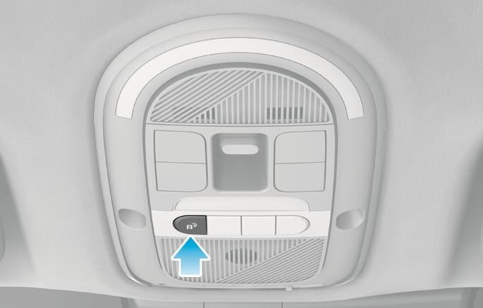

블루링크 (Bluelink)

2C_BlueLinkButton
최첨단 IT 시스템을 활용해 차량의 안전 보안, 진단, 원격 제어 및 스마트폰 연동 기능을 제공하는 커넥티드 카 서비스입니다.
-
자세한 사용 방법은 인포테인먼트 시스템 웹 매뉴얼을 참고하십시오.
배터리 방전을 방지하려면 시동이 켜진 상태로 기능을 사용하십시오.
주행 중에는 별도의 조작이 필요한 기능을 사용하지 마십시오. 운전자의 주의가 분산되는 경우 심각한 사고가 발생할 수 있습니다.